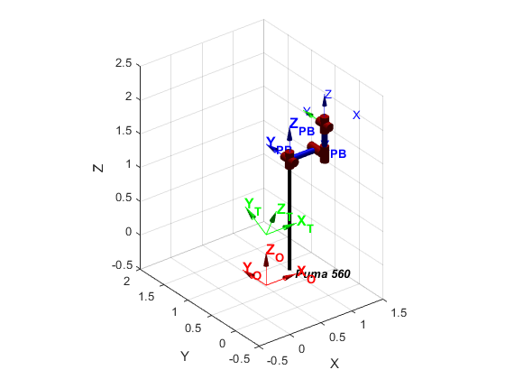

Contents
Sketching the enviroment of the robotics work cell.
%Clean variables and closing windows clc; clear; close all; %Some Important Information load('Data_groove_weld_fv_torus.mat') % This is some data you can use tableDim = [0.6 1.9]; %Table dimensions tableHeight = 0.75; %Table height tableAlfa = pi/7; %Table rotation (20º) radiusExtTorus = 0.95; diamExtTorus = radiusExtTorus*2; diamTube = 0.3; radiusTube = diamTube/2; numHoles = 8; drillHoleRadius = 0.010; numTurns = 8; WeldPointPerTurn = 8; posTorus = [0 0 0] INI = transl(posTorus); %center of the part %Main reference frames. FO = eye(4); HO=trplot(FO, ... % Plot frame T at the origin 'frame', 'O', ... 'color', 'R',... 'text_opts', {'FontSize', 12, 'FontWeight', 'bold'},... 'length',0.5,... 'arrow',... 'width', 1.2); hold on; FT = transl(0,0,tableHeight)*trotx(tableAlfa) HT=trplot(FT, ... % Plot frame T at the origin 'frame', 'T', ... 'color', 'G',... 'text_opts', {'FontSize', 12, 'FontWeight', 'bold'},... 'length',0.5,... 'arrow',... 'width', 1.2); hold on; FPB = transl(tableDim(1),cos(tableAlfa)*tableDim(2)/2,(sin(tableAlfa)*tableDim(2)/2)+tableHeight) HPB=trplot(FPB, ... % Plot frame PB at the origin 'frame', 'PB', ... 'color', 'B',... 'text_opts', {'FontSize', 12, 'FontWeight', 'bold'},... 'length',0.5,... 'arrow',... 'width', 1.2); hold on; %Plot the robot Puma mdl_puma560; p560.base = FPB; p560.plot(qz); hold on; % Draw the working table and the torus in working position. %Drawing the Table coordX = tableDim(1) %Max point on X coordinates of the table coordY = cos(tableAlfa)*tableDim(2) %Max point on Y coordinates of the table coordZ = sin(tableAlfa)*tableDim(2) %Max point on Z coordinates of the table xlabel('x'); ylabel('y'); zlabel('z'); fill3([0 coordX coordX 0],[0 0 coordY coordY],[0 0 coordZ coordZ]+tableHeight,'r'); %Drawing the Torus fv=stlread('Torus.stl');% fv is a struct with faces and vertices %Rotate to get it facing up fv.vertices=fv.vertices*rotx(pi); %Translating the torus to [0,0,0] mi=min(fv.vertices); fv.vertices=fv.vertices-mi; %Taking the bounding box of the torus ma=max(fv.vertices); mi=min(fv.vertices); dmami=ma-mi %Scaling the torus fv.vertices=(fv.vertices/(dmami(1)/diamExtTorus)); %Positioning and posing the torus fv.vertices=(fv.vertices)*rotz(-pi/2)*rotx(-tableAlfa); fv.vertices=fv.vertices+[diamTube+(tableDim(1)-diamTube)/2 0 tableHeight] SS=patch(fv,... 'FaceColor', [0.8 0.8 1.0], ... 'EdgeColor', 'none', ... 'FaceLighting', 'gouraud', ... 'AmbientStrength', 0.15); % Add a camera light, and tone down the specular highlighting camlight('headlight'); material('dull'); alpha (SS,0.5); % Fix the axes scaling, and set a nice view angle %axis 'equal' axis([-0.5 1.5 -0.5 2 -0.5 2.5]); axis 'equal' % Give diferent points of view of the scenary: Top, Front, Lateral and isometrics view.
posTorus =
0 0 0
FT =
1.0000 0 0 0
0 0.9010 -0.4339 0
0 0.4339 0.9010 0.7500
0 0 0 1.0000
FPB =
1.0000 0 0 0.6000
0 1.0000 0 0.8559
0 0 1.0000 1.1622
0 0 0 1.0000
coordX =
0.6000
coordY =
1.7118
coordZ =
0.8244
dmami =
18.9489 3.0000 9.6941
fv =
struct with fields:
faces: [668×3 double]
vertices: [2004×3 double]
 Working points.
Give here your code to get the variables to locate: a) The reference frame for all drills holes, such that z-axis is orthogonal to the surface of the torus and the x-axis is in the direction of minimun curvature. Draw in scale the frames
for i=0:numHoles-1 FH = FPB*trotx(tableAlfa)*trotx((-pi/numHoles)/2)*trotx(-pi*i/numHoles)*transl([-diamTube+(tableDim(1)-diamTube)/2 -radiusExtTorus+radiusTube 0])*troty(pi/2); HPB=trplot(FH, ... % Plot frame PB at the origin 'frame', 'H', ... 'color', 'K',... 'text_opts', {'FontSize', 11, 'FontWeight', 'bold'},... 'length', 0.1,... 'arrow',... 'width', 0.2); hold on; end for i=0:numHoles-1 FH = FPB*trotx(tableAlfa)*trotx((-pi/numHoles)/2)*trotx(-pi*i/numHoles)*transl([-diamTube*2+(tableDim(1)-diamTube)/2 -radiusExtTorus+radiusTube 0])*troty(pi/2)*trotx(pi); HPB=trplot(FH, ... % Plot frame PB at the origin 'frame', 'H', ... 'color', 'K',... 'text_opts', {'FontSize', 11, 'FontWeight', 'bold'},... 'length', 0.1,... 'arrow',... 'width', 0.1); hold on; end axis([-0.5 1.5 -0.5 2 -0.5 2.5]); % b) Repeat the obove operation for the center of the milling groove. Draw % this frames. %plot3(Groove(1,:),Groove(2,:),Groove(3,:),'r') % plotting the Groove %title ('Groove shape') %xlabel('x'); %ylabel('y'); %zlabel('z'); %axis equal % c) The reference frames for all welding points, such that z-axis of the tool % is orthogonal to the surface of the torus and the x-axis is in the direction of % spiral trajectory. Draw in scale the frames %plot3(Weld_points(1,:),Weld_points(2,:),Weld_points(3,:),'g','LineWidth',2) %hold on %scatter3(Weld_points(1,:),Weld_points(2,:),Weld_points(3,:),'b','fillet') %xlabel('x'); %ylabel('y'); %zlabel('z'); %for i=1:n %Welder_Pose(:,:,i)= INI*trotx(-pi/2)*troty(2*pi*i/n)*transl(0, 0, -radius) %end %Q= p560.ikine6s(Welder_Pose, 'run') %p560.plot(Q)